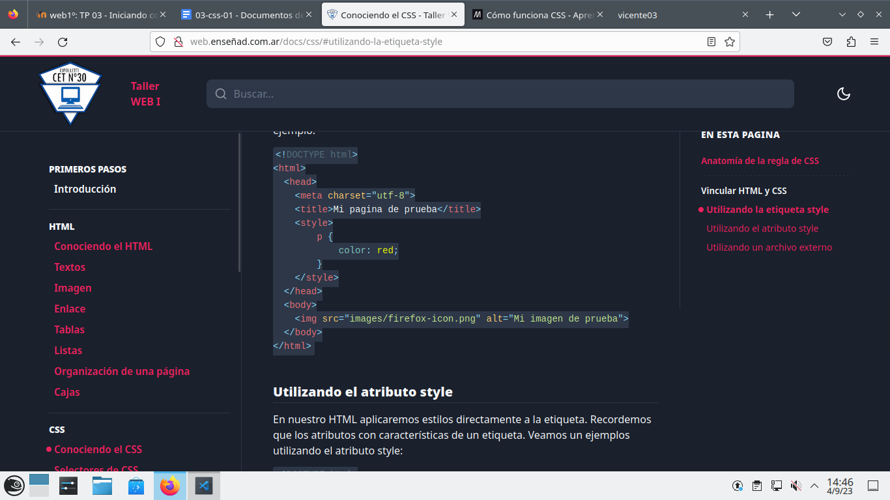

trabajo practico 03 CSS
¿Qué significa CSS?
CSS significa las Hojas de estilo en cascada (del ingles Cascading Stylesheets CSS)
¿Para qué sirve el CSS? ¿Qué programa se utiliza para interpretar el CSS?
CSS nos brinda varias opciones para poder modificar nuestra pagina web, cambiar los colores, el tamaño, se puede
diseñar, crear animaciones.
los programas mas conocidos para poder interpretar el CSS son.
¿A qué se llama regla de CSS?
los CSS se ordenan por reglas, estas son un conjunto de propiedades y valores que se aplcan
¿Cuál es la anatomía de la regla de CSS?
la anatomía de la regla de CSS es selector, propiedad

¿Qué es un selector en CSS?
el selector es la primera regla de CSS, esta nos permite una gran precision a la hora de seleccionar elementos o
modificar el html
Identificar y definir los selectores: de ID, de clases, universal, de etiquetas, descendente.
- ID:selectores de ID de CSS buscan un elemento basado en el contenido del atributo
- CLASES: selectores de clase buscan un elemento basado en el contenido de su atributo El atributo class está
definido como una lista de elementos separados por espacio, y uno de esos elementos debe coincidir
exactamente con el nombre de clase dado en el selector.
- universal nos permite darle estilo a cualquier tipo de atributo
- de etiquetas podemos seleccionar varias etiquetas al mismo tiempo conectandolas
- Con este selector seleccionamos un elemento que está dentro de otro del mismo tipo. Estos seectores siempre
están formados por dos o más selectores separados entre si.
Explicar brevemente utilizando una lista ordenada: ¿cómo funciona el CSS?
- el usuario entra a a la web
- combierte el HTML en un DOM((Modelo de objetos del documento)
- el navegador que estes utilizando busca recursos para vincular con el HTML
- el navegador analiza el CSS y ordena en diferentes «cubos» las diferentes reglas según el tipo de selector
- una vez aplicadas las reglas el árbol de renderización presenta la estructura
- y por ultimo paso nos muestra el aspectto en nuestra pantalla
¿Cuáles son las tres formas para vincular CSS con HTML?
En nuestro HTML y dentro de la etiqueta head utilizaremos la etiqueta style es decir que los CSS se aplican
al MISMO docuemnto HTML. Por ejemplo:

diseño1
diseño2
dentro de body ¿son iguales? ¿Qué es lo distinto? ¿Qué contribuye al cambio de diseño?
una vez dentro son ambos iguales, lo que cambia en el dieño es dentro del css que son los temas del color,
fondo,etc
Abrir los dos archivos CSS de los diseños seleccionados. ¿Son los mismos?
una vez abierto con con CSS cambia sus diseños
En líneas generales, el mismo HTML ¿puede tener diferentes diseños?
si el mismo HTML puede tener miles de diferencias